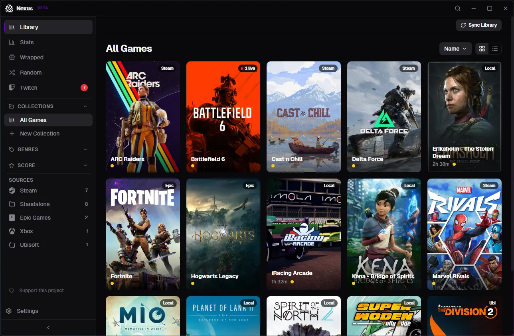
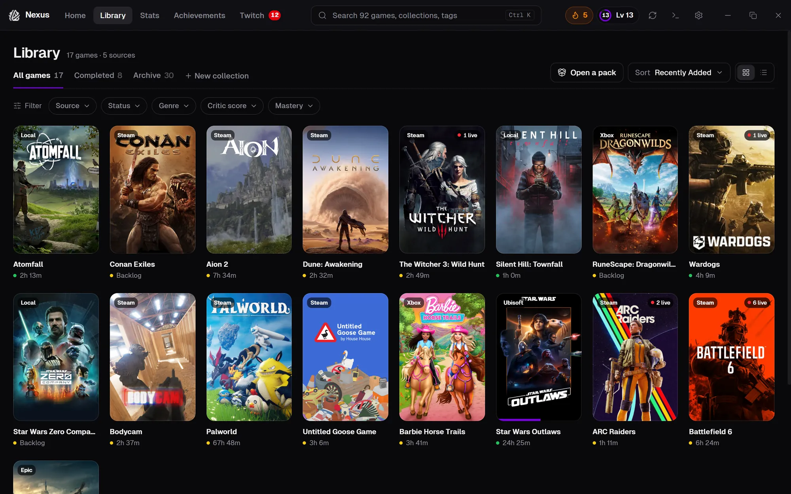
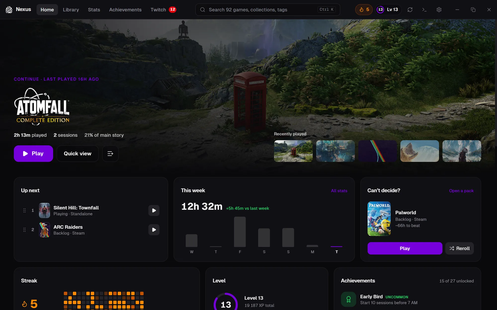

Milestone · Released October 12, 2026
1.0
A whole
A whole
new Nexus
Nexus 1.0 rebuilds the whole app around a new layout. A top bar replaces the sidebar, Home becomes a dashboard that spotlights what to play next, and every page has been redesigned. Retro mode is unchanged and still one click away.
Rebuilt in 1.0
HomeLibraryGame pageStatsAchievementsTwitchSettings
Already on 0.5? Nexus updates itself to 1.0 on next launch.
From sidebar to top bar


The tour
Every page, redesigned.

01 / 10
Home is a dashboard
A spotlight on what you’re playing, or the best game you haven’t started, plus Up next, your week, streak, level, achievements, who’s live, and shelves like Finish in a weekend.
Also in 1.0
NEWNow Playing stripWhile a game runs, a strip under the top bar shows what’s playing.
NEWGet startedA checklist and library overview for new libraries, and a proper welcome when the library is empty.
NEWSync progress everywhereArtwork and metadata fetching shows under the top bar on every page.
IMPROVEDOnboardingA cleaner step-by-step setup.
IMPROVEDSmoother dialogsNo more flicker behind pop-ups.
IMPROVEDSettings searchFind any setting by typing its name.
Retro mode is still here
Unchanged, and one click away in the top bar. Your library as a DOS-era terminal, BIOS screen included.
Your library comes with you
Play time, collections, notes, tags and achievements carry over. Nexus updates in place.
Fixed in 1.0
- API keysSteamGridDB and IGDB keys can be added in Settings again.
- Import libraryImporting a library export works again.
- Re-scanRe-scanning no longer drops games found in your own folders.
- Settings that didn’t stickAnimations and window transparency now survive a restart.
- Late-night sessionsSessions near midnight count on the right day in Stats.